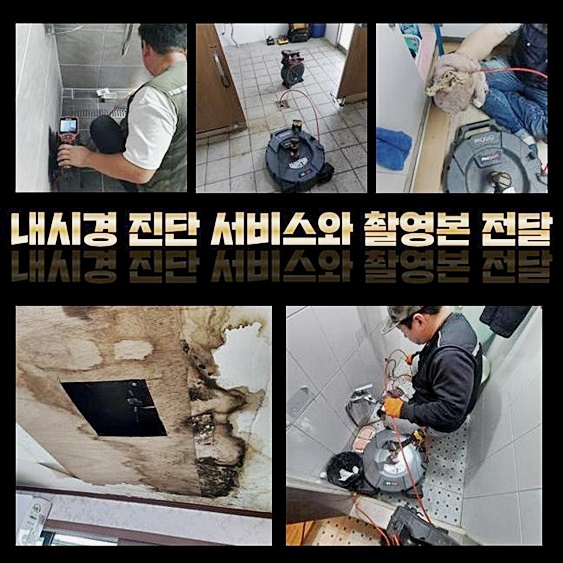
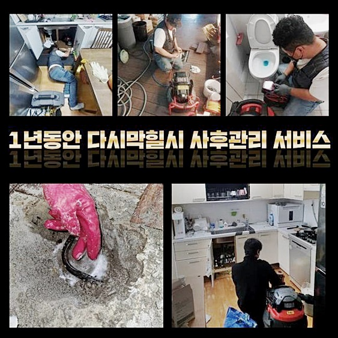
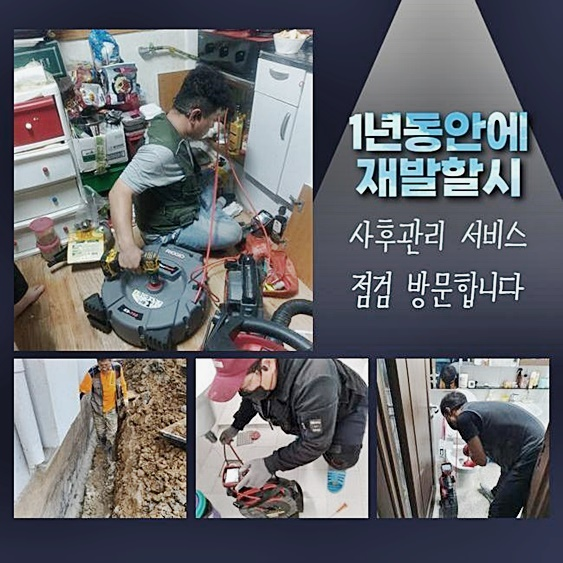
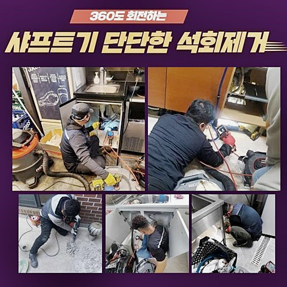
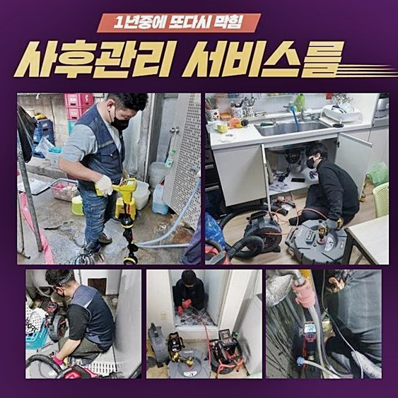
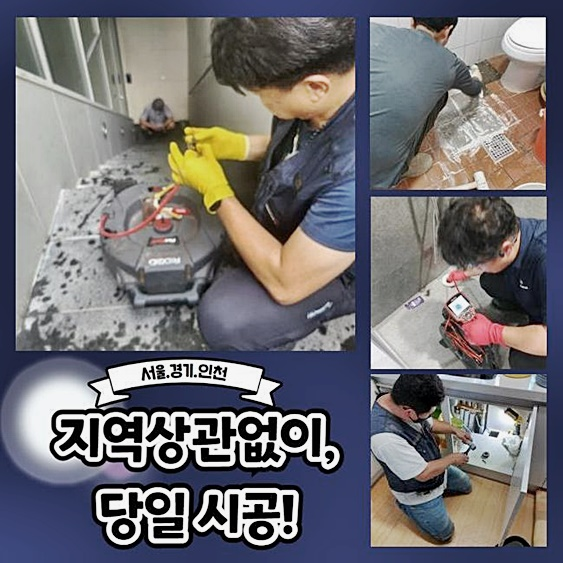
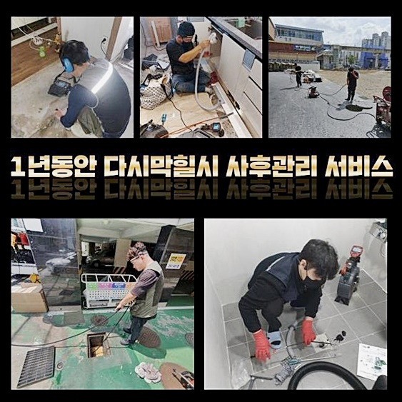

🏠 광주 삼동하수도뚫음 남종면 냄새차단 배관설비공사
용인시 처인구 배관막힘 전문 시공 후기

📋 작업 개요
- 위치: 용인시 처인구, 수원시 영통구, 화성시 동탄
- 서비스 유형: 배관막힘, 고압세척, 내시경점검
- 작업 일시:
- 업체명: 하수구수사대 (010-5615-2118)
🔍 문제 상황
광주 삼동하수도뚫음 남종면 냄새차단 배관설비공사
점심전에 저희 업체는 고객의 전화를 받아 배수관의 불편사항을 진단해보기 위하여 주소지로 방문했어요
가정에서 하수시스템의 하수가 잘 안내려가는 것 같은 이상함을 인지 하셨지만 일상적으로 큰영향을 받는건 아니라고 생각하셔서 의뢰를 맡기거나 하지 못해서 문제가 커졌다고 알려주셨어요
하지만 상황이 심각해져 배수라인을 통해서 오염수가 내려가지 못하고 곳곳으로 물들이 치솟아 오르고, 그로인해서 고약한 냄새가 났습니다
피해범위들이 커지고 있다는 것을 실제로 느끼시고 서둘러서 당사로 시공을 의뢰 해주셨어요
배수가 진행되는 힘이 느려졌거나 사용시에 역류하는 문제가 일어나고 있다는것은 배관의 문제를 알려주는 중요신호입니다
그러한 표시들을 쉽게 생각해서 방치하신다면 심각한 사태가 일어나게 되므로 진행이 많이 되지 않았을때 수리를 하는게 중요해요

🔎 원인 분석
💡 전문가 진단: 정밀 진단 장비를 사용하여 슬러지의 고착 여부를 판명하고 타격/세척 작업을 실시했습니다.
침전물이 달라붙어 시간이 지날수록 배수관을 막히게하고 이러한 진행들로 막힘현상이나 하수 순환의 늦춰짐에 따라 파생된 오류들이 일어납니다
일상 생활속에서 요리하면서 나오게되는 쓰고남은 오일이나 버리는 음식물들과 화장실에서 쓰는 샴푸나 린스 후 머리칼들이 하수라인에 엉키면서 하수로의 역류를 발생시킵니다
그러한 오염물이 크기를 더해가며 배수관의 안쪽을 점점 막게되면서 오염수가 빠르게 방출되지 못하게됩니다
이와같은 사태를 알고있으면서도 주의 하지않고 방치하신다면 물이 역류하는 사태로 이어지게 될 수도 있고 하수라인의 내면에 쌓인 노폐물이 오랜시간 고여있어 썩기 시작하면서 고약한 냄새를 발생시키는 원인으로 작용합니다
배수라인의 문제들을 방지하려면 평소의 습관속에서 주의하셔야합니다
우리가 자주 사용하는 요리할때는 폐오일을 종이타올로 닦아내고 음식물쓰레기는 따로 모아버리는 방법들이 필수입니다
샤워하면서는 배수구 부근을 신경써서 세척하시고 작은 이물질들을 분리배출 하는 습관들이 가장 효율적입니다
이렇게 배수구의 문제들이 발견됐을때 조치를 위한 작업들을 할 수 있는 시기를 놓치게 된다면 문제가 발견되는 지점이 퍼지면서 비용적인 부담들이 커지게 됩니다

🔧 작업 과정
배수관막힘이 생긴 현재 상태를 클린하게 처리하고자 안을 볼 수 있는 장비들을 이용해 문제의 원인들을 진단하게 됩니다
종합적인 진단을 진행 하는것이 시간이 오래 걸려서 간과한 상태로 계획없이 기계를 이용해서 일반적인 과정만 진행한다면 문제를 발생시키는 원인들을 제거해내지 못한 것으로 비슷한 문제로 막힘 현상들이 반복되겠죠
비슷한 이유로 전문가를 알아보실땐 유선으로 상담하시면서 내부를 볼 수있는 장치를 활용하여 원인이 된 이유를 검사해보고 이후 과정을 진행하게 되는지 작업이 가능한 항목을 확실하게 확인하시고 진행하는게 올바른 방식이예요
저희 전문가는 복합적인 문제들이 생긴 의뢰를 받았어도 오랜시간을 투자하게 되는 작업들이 예상된다 해도 포기하는 법 없이 상세원인을 밝히고 나서 해결에 필요한 과정들을 시행하고 있습니다
이번현장은 간단한 공사가 아니라서 내시경기기를 배수관에 밀어넣어 전체적으로 진단을 진행한 결과로는 배수라인이 모이게 되는 가장큰 하수관에 부패되기 시작한 불순물이 단단하게 변해서 막고있는 상황을 알게 되었습니다
중요한 배수관은 설비의 중심에 있으므로 스프링헤드나 샤프트장치처럼 노폐물을 분쇄하는 기계들만 사용해서 진행하게 된다면 막힌 부근까지 장비들이 닿질 못하게 돼서 작업의 한계에 직면할 수도 있는 위험성이 생깁니다
이러한 현장에서는 고압의 배수관 청소를 시행하여 전반적으로 세정하는게 좋아요
강함 힘만으로 세척을 시행하는 장비는 특수한 약품들을 배제시키기에 특별한 문제가 생기지 않는 작업이고 고압의 기기로 노폐물을 밀어 내보내는 작업들을 시공하게 되는만큼 하수관 내벽에 침전된 노폐물을 전부 배출시키는 과정이 되겠습니다
폭넓은 경험들을 가진 전문가가 하수시스템의 생김새와 주의사항을 파악한 상황에서 부분적으로 나눈 배수관에 섬세한 압력들을 사용하며 세정작업을 진행하고 난후 오랫동안 축적된 이물질들이 부서져서 배출되는 것을 직접 눈으로 보았습니다
세척하는 과정에서 예상했던 양보다 상당량의 불순물이 빠져나오는 현장이 많으므로 보완장치를 사용해서 주변에 막으로 막아두고 작업을 진행하며 시공이 모두 종료되면 작업반경 외에 피해가 일어나는 것을 막고자 오염원을 완전히 처리합니다
고도의 압력을 사용하는 과정에서 예상치를 넘기는 상당한 불순물이 폭발하듯이 뿜어져나와서 보호작업을 다했어도 주변부위가 오염되곤 합니다
매번 시공이 끝난 다음에 완벽하게 정리까지 하고 시공을 완료합니다


✅ 작업 완료
위와같은 내용들을 읽으시면서 배수라인의 막힘등이 염려 되신다면 가능한 빨리 전문가에게 상담을 해보시는게 중요하단 점을 알고 있으시겠지요
일상에서 생기는 하수시스템의 오류사항을 완벽하게 수리 할수있는 전문진을 찾고자 하신 경우라면 하루빨리 의뢰를 주시기 바랍니다
수많은 막힘사고를 경험해본 전문업체가 긴급출동해서 전반적인 사태를 자세히 살펴보고 고객의 불편 사항을 할 수 있는한 부담되지 않는 선에서 처리하는 것을 목표로 정성을 다해서 모시겠습니다




⚠️ 하수구 배관 막힘 예방 및 관리 가이드
- ✅ 머리카락, 비닐, 물티슈 등 물에 분해되지 않는 이물질은 절대 흘려보내지 마세요.
- ✅ 기름기 많은 식기는 설거지 전 키친타올로 먼저 기름때를 닦아내세요.
- ✅ 주기적으로 배수구에 뜨거운 물을 가득 부어주어 유지방 고착을 방지하세요.
- ✅ 작업 후 1년 이내 재발 시 무상 A/S 보증 서비스를 제공합니다.
💡 핵심 정리
- 확실한 장비 작업(내시경 점검 및 샤프트 스케일링)으로 원인을 뿌리 뽑습니다.
- 작업 후 1년 이내에 동일한 부위 재발 시 100% 무상 A/S 서비스를 보장합니다.
- 서울 · 경기 · 인천 전 지역에 24시간 언제든 긴급 출동할 수 있도록 항시 대기 중입니다.
❓ 자주 묻는 질문 (FAQ)
🚨 용인시 처인구 배관막힘 문제로 고민이신가요?
정확한 원인 진단과 확실한 시공으로 재발 없는 해결을 약속드립니다.
24시간 긴급 출동 | 서울 · 경기 · 인천 전지역 | 1년 내 재발 시 무상 A/S